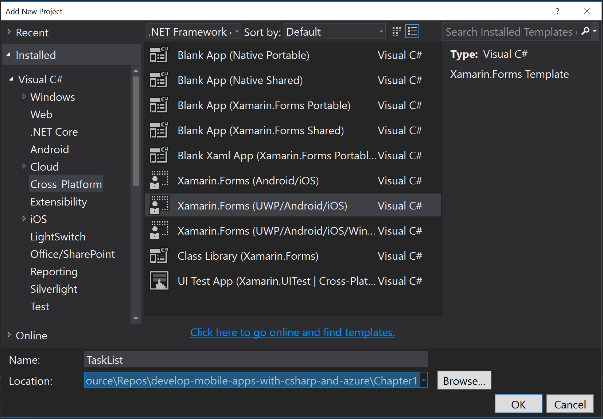

Your First Mobile App
There is a lot of detail to absorb about the possible services that the mobile client can consume and I will go into significant depth on those subjects. First, wouldn't it be nice to write some code and get something working? Microsoft Azure has a great first-steps tutorial that takes you via the quickest possible route from creating a mobile backend to having a functional backend. I would like to take things a little slower so that we can understand what is going on while we are doing the process. We will have practically the same application at the end.
The application we are going to build together is a simple task list. The mobile client will have three screens - an entry screen, a task list and a task details page. I have mocked these pages up using MockingBot.
Mocking your screens before you start coding is a great habit to get into. There are some great tools available including free tools like MockingBot. Doing mockups before you start coding is a good way to prevent wasted time later on.

Why include a back button? If you are using iOS, then you may want to remove the back button as the style guides suggest you don't need one. Other platforms will need it though, so it's best to start with the least common denominator. It's the same reason I add a refresh button even though it's only valid on Windows Phone!
My ideas for this app include:
- Tapping on a task title in the task list will bring up the details page.
- Toggling the completed link in the task list will set the completed flag.
- Tapping the spinner will initiate a network refresh.
- Clicking on Delete Task in the task details will ask "Are you sure?" before deleting the task.
Now that we have our client screens planned out, we can move onto the thinking about the mobile backend.
The Mobile Backend
The mobile backend is an ASP.NET WebApi that is served from within Azure App Service: a highly scalable and redundant web hosting facility that supports all the major web languages (like ASP.NET, Node, PHP and Python).
Creating a Simple Azure Mobile Apps Backend
Microsoft Azure has included a comprehensive starter kit template in the Azure SDK. To get started:
- Fire up Visual Studio 2015
- Add a new project with File -> New Project...
-
In the New Project window:
- Open up Templates -> Visual C# -> Web and select ASP.NET Web Application (.NET Framework).
- Enter Backend for the Name and Chapter1 for the Solution name.
- Pick a suitable directory for the Location field.
- Click on OK.

-
In the New ASP.NET Web Application window:
- Click on Azure Mobile App.
- Do NOT check "Host in the cloud" or any other checkboxes.
- Click on OK.
At this point, Visual Studio will create your backend project.
It's very tempting to select Azure Mobile Services instead - it sounds closer to what you want. Azure Mobile Services is the OLD service and is being shut down. You should not select Azure Mobile Services for any project.
There are a few files of which you should take note. The Mobile Apps SDK is
initialized within App_Start\Startup.MobileApp.cs (with the call to the
configuration routine happening within Startup.cs). The default startup
routine is reasonable but it hides what it is doing behind extension methods.
This technique is fairly common in ASP.NET programs. Let's expand the configuration
routine to only include what we need:
public static void ConfigureMobileApp(IAppBuilder app)
{
var config = new HttpConfiguration();
var mobileConfig = new MobileAppConfiguration();
mobileConfig
.AddTablesWithEntityFramework()
.ApplyTo(config);
Database.SetInitializer(new MobileServiceInitializer());
app.UseWebApi(config);
}
The minimal version of the mobile backend initialization is actually shorter than the original. It also only includes a data access layer. Other services like authentication, storage and push notifications are not configured.
There is another method in the App_Start\Startup.MobileApp.cs file for
seeding data into the database for us. We can leave that alone for now, but
remember it is there in case we need to adust things for your own backend.
The next important file is the DbContext - located in Models\MobileServiceContext.cs.
Azure Mobile Apps is heavily dependent on Entity Framework v6.x and the
DbContext is a central part of that library. Fortunately, we don't need
to do anything to this file right now.
Finally, we get to the meat of the backend. The whole point of this demonstration is to project a single database table - the TodoItem table - into the mobile realm with the aid of an opinionated OData v3 feed. To that end, we need three items:
- A
DbSet<>within theDbContext - A Data Transfer Object (or DTO)
- A Table Controller
The first item is already taken care of. However, if we added additional tables,
we would have to modify the MobileServiceContext. The DTO is a special model,
located in the DataObjects folder:
using Microsoft.Azure.Mobile.Server;
namespace Backend.DataObjects
{
public class TodoItem : EntityData
{
public string Text { get; set; }
public bool Complete { get; set; }
}
}
Note that the model uses EntityData as a base class. The EntityData class
adds five additional properties to the class - we'll discuss those in more
details during the Data Access and Offline Sync chapter.
Finally, let's look at the Controllers\TodoItemController.cs:
using System.Linq;
using System.Threading.Tasks;
using System.Web.Http;
using System.Web.Http.Controllers;
using System.Web.Http.OData;
using Backend.DataObjects;
using Backend.Models;
using Microsoft.Azure.Mobile.Server;
namespace Backend.Controllers
{
public class TodoItemController : TableController<TodoItem>
{
protected override void Initialize(HttpControllerContext controllerContext)
{
base.Initialize(controllerContext);
MobileServiceContext context = new MobileServiceContext();
DomainManager = new EntityDomainManager<TodoItem>(context, Request);
}
// GET tables/TodoItem
public IQueryable<TodoItem> GetAllTodoItems() => Query();
// GET tables/TodoItem/48D68C86-6EA6-4C25-AA33-223FC9A27959
public SingleResult<TodoItem> GetTodoItem(string id) => Lookup(id);
// PATCH tables/TodoItem/48D68C86-6EA6-4C25-AA33-223FC9A27959
public Task<TodoItem> PatchTodoItem(string id, Delta<TodoItem> patch) => UpdateAsync(id, patch);
// POST tables/TodoItem
public async Task<IHttpActionResult> PostTodoItem(TodoItem item)
{
TodoItem current = await InsertAsync(item);
return CreatedAtRoute("Tables", new { id = current.Id }, current);
}
// DELETE tables/TodoItem/48D68C86-6EA6-4C25-AA33-223FC9A27959
public Task DeleteTodoItem(string id) => DeleteAsync(id);
}
}
The TableController is the central processing for the database access layer.
It handles all the OData capabilities for us. This means that the actual code
for this controller is tiny - just 12 lines of code.
You can delete the
Controllers\ValuesController.csfile if you like - it isn't important for this walkthrough.
We can build the project at this point. If Visual Studio hasn't done so already, the missing NuGet packages for Azure Mobile Apps will be downloaded. There should not be any errors. If there are, check the typing for any changes you made.
Building an Azure App Service for Mobile Apps
The next step in the process is to build the resources on Azure that will run your mobile backend. Start by logging into the Azure Portal, then follow these instructions:
- Click on the big + New button in the top-left corner.
- Click on Web + Mobile, then Mobile App.
-
Enter a unique name in the App name box.
Since the name doesn't matter and it has to be unique, you can use a GUID generator to generate a unique name.
-
If you have more than one subscription (for example, you have a trial and an MSDN subscription), then ensure you select the right subscription in the Subscription drop-down.
-
Select Create new under resource group and enter a name for this mobile application.
Resource groups are great for grouping all the resources associated with a mobile application together. During development, it means you can delete all the resources in one operation. For production, it means you can see how much the service is costing you and how the resources are being used.
-
Finally, select or create a new App Service Plan.
The App Service Plan is the thing that actually bills you - not the web or mobile backend. You can run a number of web or mobile backends on the same App Service Plan.
I tend to create a new App Service Plan for each mobile application. This is because the App Service Plan lives inside the Resource Group that you create. The process is relatively simple. You have two choices. The easy choice is where is the service going to run. In a production environment, the correct choice is "near your customers". During development "close to the developers" is a good choice. Unfortunately, neither of those is an option, so you will have to translate into some sort of geographic location. With 16 regions to choose from, you have a lot of choice.
The second choice you have to make is what to run the service on - also known as the Pricing tier. If you click on View all, you will see you have lots of choices. F1 Free and D1 Shared, for example, run on shared resources and are CPU limited. You should avoid these as the service will stop responding when you are over the CPU quota. That leaves Basic, Standard and Premium. Basic has no automatic scaling and can run up to 3 instances - perfect for development tasks. Standard and Premium both have automatic scaling and large amounts of storage - they differ in the number of sites or instances you can run on them.
Finally, there is a number after the plan - this tells you how big the virtual machine is that the plan is running on. The numbers differ by number of cores and memory.
For our purposes, an F1 Free site is enough to run the site unless we run into problems.
-
Once you have created your app service plan and saved it, click on Create.
The creation of the service can take a couple of minutes, depending on what else is going on. Once you have created your app service, the App Service blade will open up.
What's the difference between a Web App, a Mobile App and an API App? Not a lot. The type determines which Quick start projects are available in the Quick start menu under All settings. Since we selected a Mobile app, a set of starter client projects for mobile devices will be presented.
The next step in the process is to create a SQL Azure instance. The ASP.NET application that we produced earlier will use this to store the data presented in the table controller.
- Click on the + New button on the left hand side of the page.
- Select Data + Storage and then SQL Database.
- Enter a unique database name (I use a GUID again) in the Database name box.
- Select Use existing under the Resource group, then select the resource group you created earlier.
- Select Blank database in the Select source box.
-
Click on Configure required settings for the Server.
- Click on Create a new server.
- Enter another globally unique name for the Server name (I use a GUID yet again).
- Enter appservice in the Server admin login (or use your own name).
- Enter a password in the Password and Confirm password boxes.
- Select the same location as your App Service in the Location box.
- Click on Select to create the Server.
-
Click on the Pricing tier. The B Basic plan is the cheapest plan available.
- Click on Create.
The SQL Azure instance takes longer to deploy than the App Service in general. Unfortunately, you cannot get away without a cost if you are going to develop mobile backends with C#.
GUIDs are not the best names to use when you need to actually find resources, but the prevent conflicts when deploying, so I prefer them. You can prefix them (example: chapter1-GUID) to aid in finding them. Generally, the first four digits are enough to identify individual resources.
Finally, you will need to link your SQL Azure instance to the App Service instance:
- Click on Resource groups in the left hand side menu.
- Click on the resource group you created.
- Click on the App Service you created.
- Click on All settings.
- Click on Data connections in the MOBILE menu.
-
Click on Add.
- Click on the Configure required settings under SQL Database.
- Select the database you just created, then click on Select.
- Click on Configure required settings under Connection string.
- Enter appservice in the User Name box.
- Enter your chosen password in the Password box.
- watch for green tick marks to ensure the username and password are correct.
- Click on OK
- Click on OK in the Add data connection blade.
This produces another deployment step. It doesn't take very long so you can switch back to your Visual Studio window.
If you want a completely free mobile backend, search for the Mobile Apps Quickstart in the Azure Marketplace. This template does not require a database. It relies on a Node backend, however, so you won't be developing a C# backend.
Deploying the Azure Mobile Apps Backend
Deploying to Azure as a developer can be accomplished while entirely within Visual Studio:
- Right-click on the Backend project, then select Publish....
-
Make sure you see this screen shot:

If you do not see this image, then it is likely you have an older version of the Azure SDK installed. Make sure the Azure SDK version is v2.9 or later.
-
Click on Microsoft Azure App Service.
- You may be prompted to enter your Azure credentials here. Enter the same information that you enter to access the Azure Portal.
- In the lower box, expand the resource group that you created and select the app service you created in the portal.
- Click on OK.
- Click on Publish.
Visual Studio will open a browser. Add /tables/todoitem?ZUMO-API-VERSION=2.0.0
to the end of the URL. This will show the JSON contents of the table that we
defined in the backend.
You will see the word ZUMO all over the SDK, including in optional HTTP headers and throughout the SDK source code. ZUMO was the original code name within Microsoft for AZUre MObile.
The Mobile Client
Now that the mobile backend is created and deployed, we can move onto the client side of things. First of all, let's prepare the Visual Studio instance. If you have installed the Cross-Platform Mobile tools during the installation, most of the work has already been done. However, you may want to install the Xamarin Forms Templates using the Tools -> Extensions and Updates...

This template pack provides additional templates for Xamarin Forms development that I find useful. Most notably, there is a specific template for a mobile cross-platform project covering the Android, iOS and UWP mobile platforms.
Creating a Simple Mobile Client with Xamarin
Now that we have prepared your Visual Studio instance, we can create the project. Right-click on the solution and select Add -> New Project.... This will bring up the familiar New Project dialog. The project you want is under Visual C# -> Cross-Platform, and is called Xamarin.Forms (UWP/Android/iOS). If you did not install the Xamarin Forms Template add-on, then choose the Blank Xaml App (Xamarin.Forms Portable) project. Give the project a name, then click on OK.

Project creation will take longer than you expect, but there is a lot going on. If you have never created a mobile or UWP project before, you will be prompted to turn on Windows 10 Developer Mode:

Developer mode in Windows 10 allows you to run unsigned binaries for development purposes and to turn on debugging so that you can step through your UWP programs within Visual Studio.
We will also get asked to choose what version of the Universal Windows platform we want to target:

Version 10240 was the first version of Windows 10 that was released to the general public, so that's a good minimum version to pick. In general, the defaults for the Universal Windows Platform choice are good enough.
Finally, we will be asked about our iOS build host. This must be some sort of mac. As I said previously, I use a Mac Mini underneath my desk for this. The latest Xamarin tools forego a dedicated build service and instead use a secure shell (ssh) connection to connect to the Mac. That means you must go through the process for setting up the mac for ssh access.
When prompted about the Xamarin Mac Agent, click on OK to get the list of local mac agents:

Highlight your mac (in case there are multiples), then click on Connect.... You will be prompted for your username and password:

Just enter the username and password that you use to log in to your mac and click on Login.
What's my username? Apple tries very hard to hide the real username of your account from you. The easiest way to find your mac username is to open up the Finder. The name next to your home icon is the name of your account.
Once the project is created, you will see that four new projects have been created: a common library which you named plus one project for each platform that has been chosen. Since we chose a project with three platforms, we get four projects:

Most of our work will happen in the common library. However, we can introduce platform-specific code at any point. The platform-specific code is stored in the platform-specific project.
There is one final item we must do before we leave the set up of the project. There are a number of platform upgrades that inevitably have to happen. The Xamarin Platform is updated much more often than the Visual Studio plugin - the updates are released via NuGet: the standard method of distributing libraries for .NET applications. In addition to the inevitable Xamarin Platform update, we also will want to add the following NuGet packages:
- Microsoft.Azure.Mobile.Client v2.0.0 or later
- Newtonsoft.Json v6.0.3 or later
Although it is tempting, do not include a v1.x version of the Mobile Client. This is for the earlier Azure Mobile Services. There are many differences between the wire protocols of the two products.
You can install the NuGet packages by right-clicking on the project and selecting Manage NuGet Packages....

You must install the updates and the new NuGet packages on all four projects.
This involves repeating the same process for each client project in your
solution.
Android generally has more updates than the other platforms. Ensure that you update the main Xamarin.Forms package and then refresh the update list. This will ensure the right list of packages is updated.